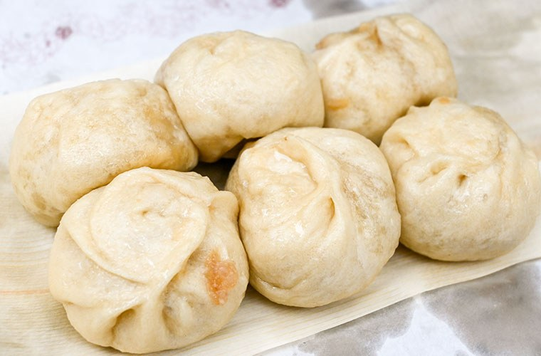
| 営業時間 | 10:00〜18:30（売切次第終了） |
|---|---|
| 定休日 | 月曜（月曜が祝日の場合は翌日） |
| 住所 | 兵庫県神戸市中央区元町通1-3-7（建て替え中は南京町広場向かいの旧・曹家包子館の場所で営業） |
| 予約 | 不可 — ☎ 078-331-7726 ／ 公式サイト |
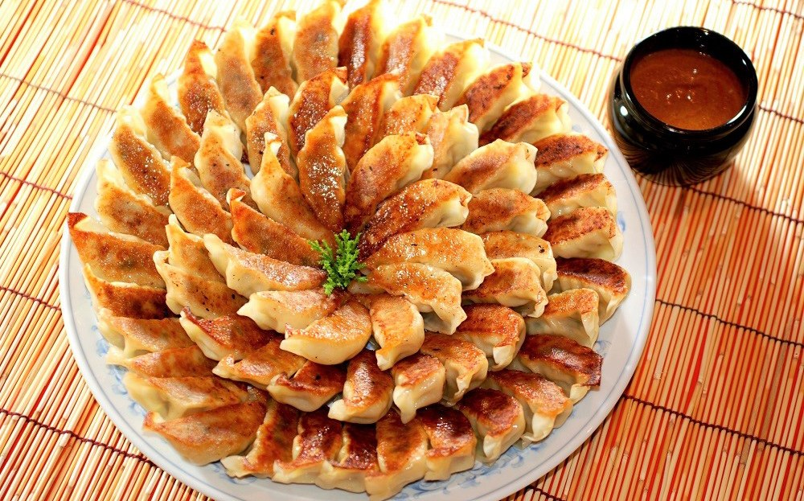
| 営業時間 | 11:45〜15:00（L.O.）／17:00〜20:30（L.O.） |
|---|---|
| 定休日 | 月曜（祝日の場合は営業） |
| 住所 | 兵庫県神戸市中央区栄町通2-8-11 |
| 予約 | 不可 — ☎ 078-331-4096 ／ 公式サイト |
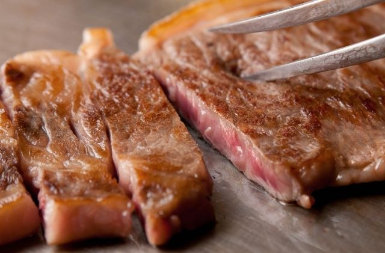
| 営業時間 | 11:00〜22:00（L.O.21:00） |
|---|---|
| 定休日 | 要確認 |
| 住所 | 兵庫県神戸市中央区下山手通2-1-17 モーリヤビル |
| 予約 | 推奨 — ☎ 078-391-4603 ／ 公式サイト |
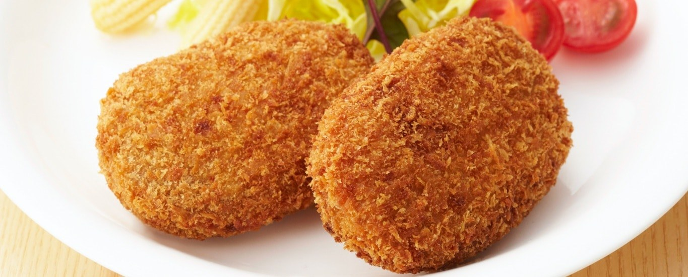
| 営業時間 | 9:00〜18:00 |
|---|---|
| 定休日 | 要確認 |
| 住所 | 兵庫県神戸市中央区元町通1-7-2 |
| 予約 | 不要 — ☎ 078-391-0350 ／ 公式サイト |
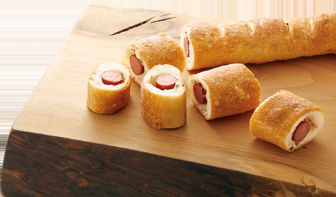
| 営業時間 | 8:00〜20:00 |
|---|---|
| 定休日 | 要確認 |
| 住所 | 兵庫県神戸市中央区布引町2-1-4 |
| 予約 | 不要 — ☎ 078-222-4180 ／ 公式サイト |
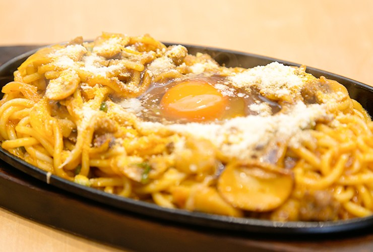
| 営業時間 | 11:00〜15:00（L.O.14:30）／17:00〜20:30（L.O.20:00） |
|---|---|
| 定休日 | 水曜 |
| 住所 | 兵庫県神戸市兵庫区新開地2-5-5 リオ神戸2F |
| 予約 | 不可 — ☎ 078-575-2073 ／ 公式サイト |
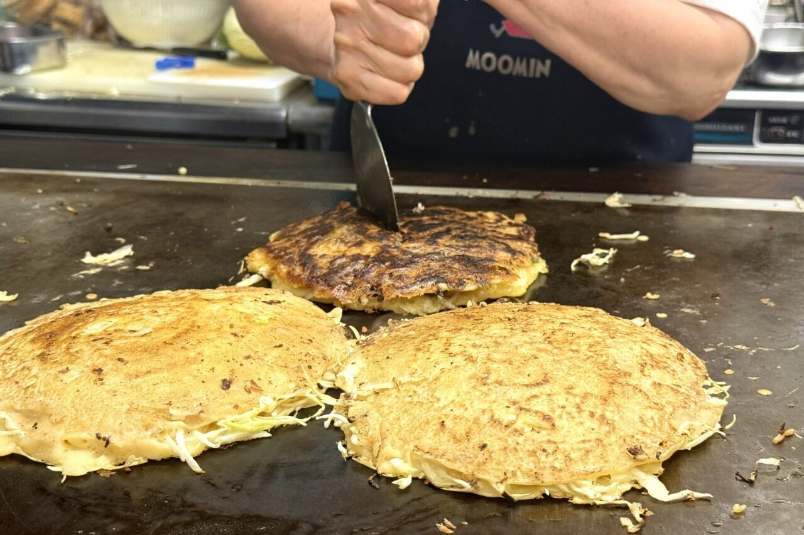
| 営業時間 | 要確認 |
|---|---|
| 定休日 | 要確認 |
| 住所 | 兵庫県神戸市長田区久保町4-8-6 |
| 予約 | 不要 — ☎ 078-611-1701 |
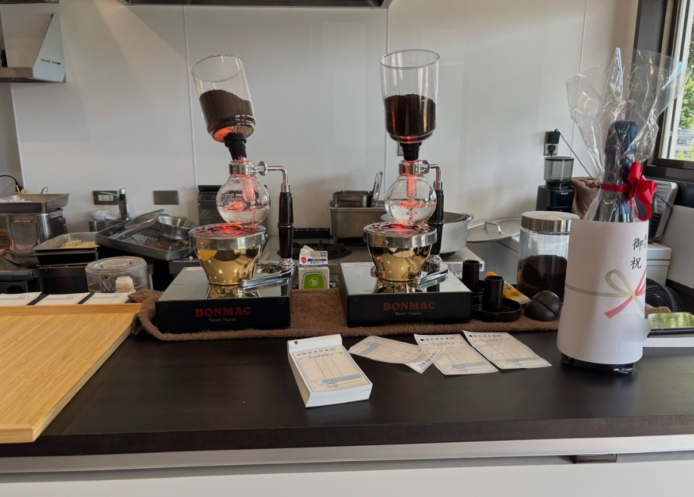
| 営業時間 | 9:00〜18:00（日により20:00まで） |
|---|---|
| 定休日 | 不定休（月ごとに告知） |
| 住所 | 兵庫県神戸市長田区大橋町9-4-1 |
| 予約 | 不要 — ☎ 078-754-8648 |
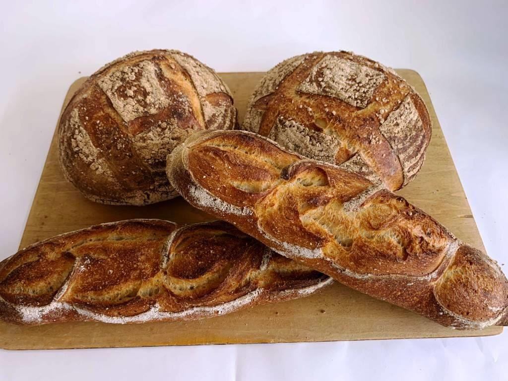
| 営業時間 | 9:00〜18:00 |
|---|---|
| 定休日 | 第1・3・5水曜、日曜・祝日（祝日は振替の可能性あり） |
| 住所 | 兵庫県神戸市東灘区岡本1-11-23 |
| 予約 | 不要 — ☎ 078-411-6686 |
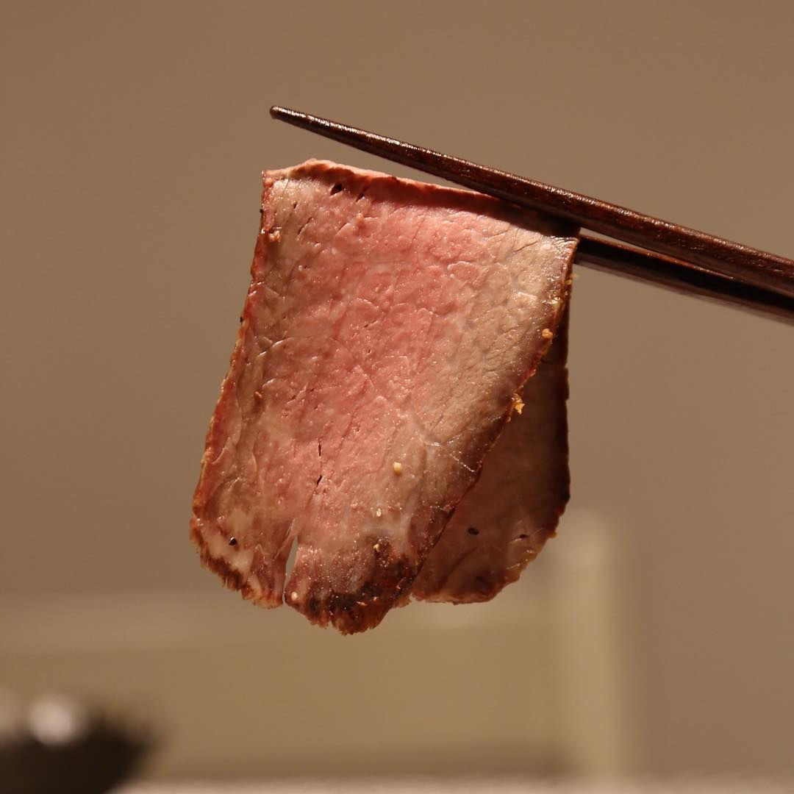
| 営業時間 | 8:00〜18:30 |
|---|---|
| 定休日 | 水曜 |
| 住所 | 兵庫県神戸市灘区水道筋3-5 |
| 予約 | 不要 — ☎ 078-861-4648 |
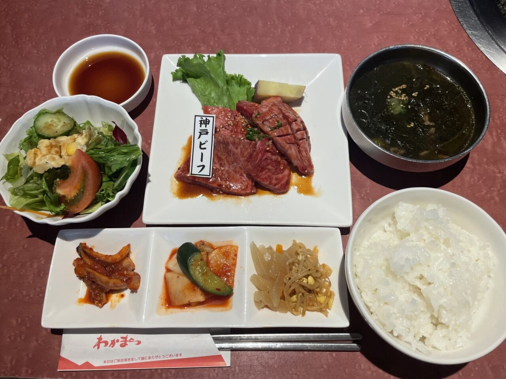
| 営業時間 | 平日ランチ 11:30〜14:00（夜は要確認） |
|---|---|
| 定休日 | 要確認 |
| 住所 | 兵庫県神戸市須磨区衣掛町5丁目2-6 |
| 予約 | 推奨 — ☎ 078-735-4444 |
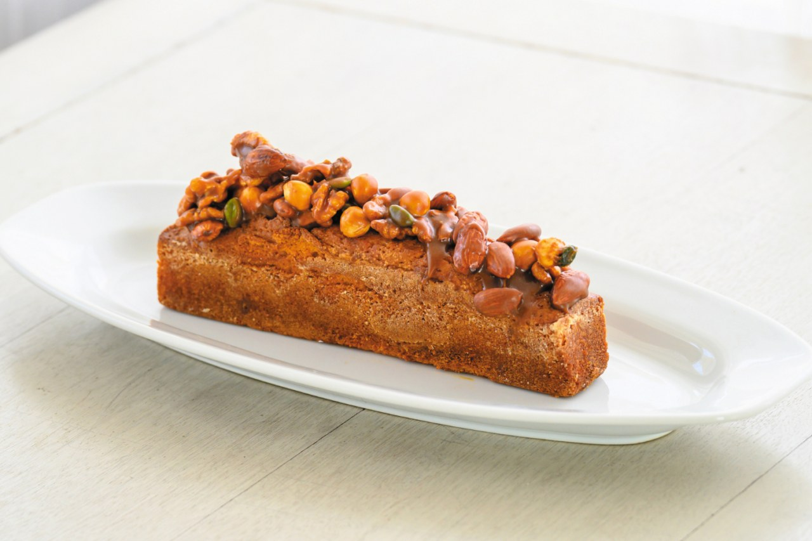
| 営業時間 | 要確認 |
|---|---|
| 定休日 | 要確認 |
| 住所 | 兵庫県神戸市垂水区霞ケ丘7丁目7-20 リアルテ霞ヶ丘1階 |
| 予約 | 不要 — ☎ 078-764-2206 |
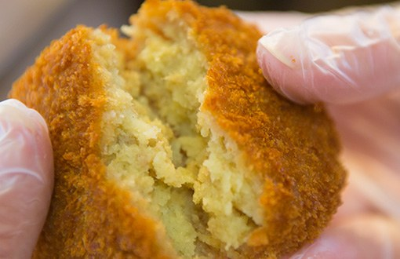
| 営業時間 | 本店精肉店 10:00〜17:00／コロッケ店 9:30〜17:00（土日祝は17:30まで）／食事処 惣次郎 11:00〜15:00・17:00〜20:00 |
|---|---|
| 定休日 | 本店精肉店・食事処は火曜・水曜（コロッケ店は不定休） |
| 住所 | 兵庫県神戸市北区有馬町813 |
| 予約 | 不要 — ☎ 078-904-0298 ／ 公式サイト |
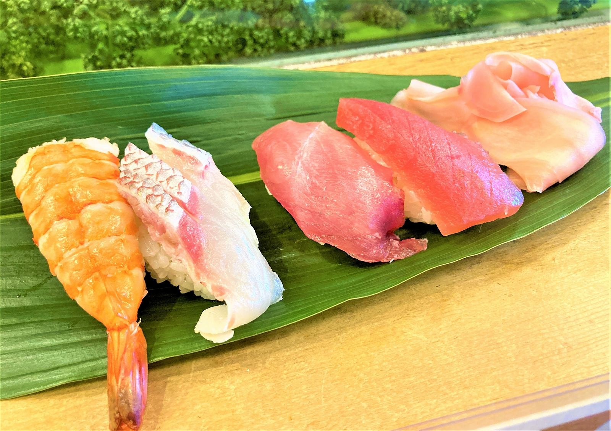
| 営業時間 | 11:30〜14:00／16:30〜21:00 |
|---|---|
| 定休日 | 水曜、第3木曜 |
| 住所 | 兵庫県神戸市東灘区魚崎北町1丁目13-1 |
| 予約 | 可 — ☎ 078-412-5015 ／ 公式サイト |
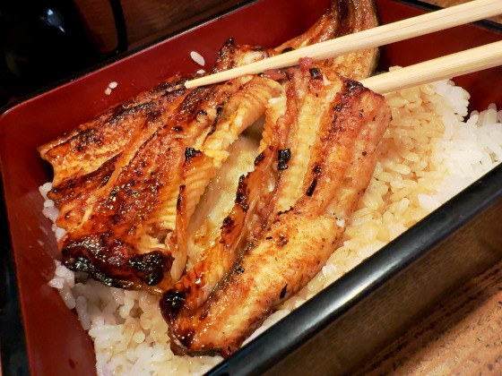
| 営業時間 | 月・木・金・土・日 11:00〜14:30／17:00〜21:00、火 11:00〜14:30 |
|---|---|
| 定休日 | 水曜 |
| 住所 | 兵庫県神戸市中央区北長狭通2-8-5 阿部ビル1F |
| 予約 | 不可 — ☎ 078-321-0339 |
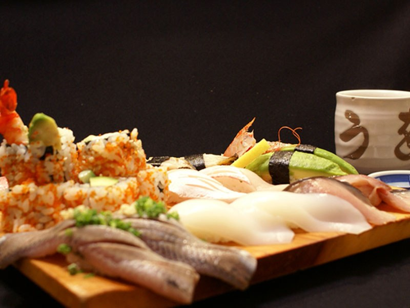
| 営業時間 | 11:30〜14:30／16:30〜22:00 |
|---|---|
| 定休日 | 月曜（祝日の場合は営業し翌火曜休） |
| 住所 | 兵庫県神戸市中央区北長狭通2-8-3 アルカザールビル1F |
| 予約 | 可 — ☎ 078-331-2526 ／ 公式サイト |
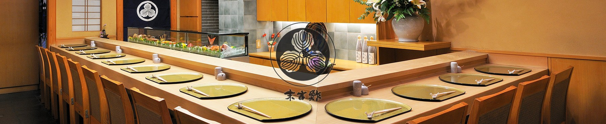
| 営業時間 | 昼 12:00〜14:00／夜 17:00〜 |
|---|---|
| 定休日 | 日曜 |
| 住所 | 兵庫県神戸市中央区加納町4丁目9-11 |
| 予約 | 推奨 — ☎ 078-321-3656 ／ 公式サイト |
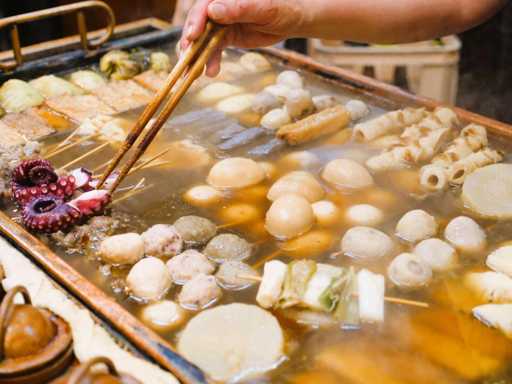
| 営業時間 | 11:00〜21:30（L.O.21:00） |
|---|---|
| 定休日 | 日曜・祝日 |
| 住所 | 兵庫県神戸市兵庫区湊町4-2-13 |
| 予約 | 可 — ☎ 078-575-6654 ／ 公式サイト |
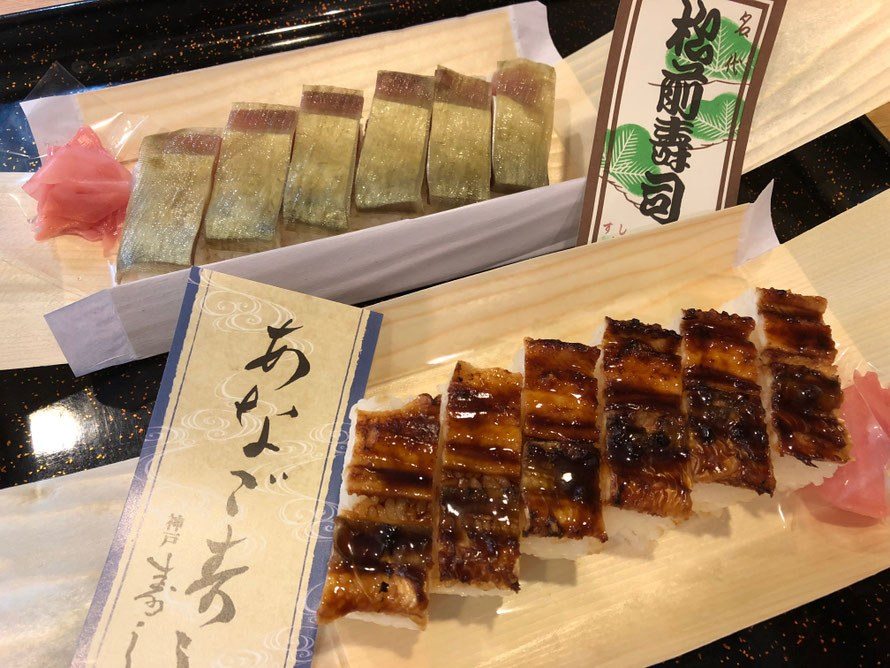
| 営業時間 | 10:30〜15:00（売り切れ次第閉店）／夕方以降は予約のみ |
|---|---|
| 定休日 | 火曜・水曜 |
| 住所 | 兵庫県神戸市兵庫区御崎町2-2-7 |
| 予約 | 推奨 — ☎ 078-671-0598 ／ 公式サイト |
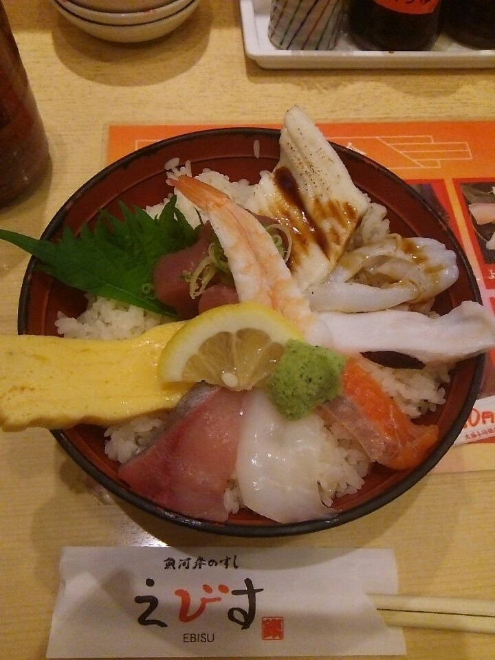
| 営業時間 | 10:30〜21:30（L.O.21:00） |
|---|---|
| 定休日 | 年中無休 |
| 住所 | 兵庫県神戸市長田区若松町4丁目2-15 ピフレ新長田108号 |
| 予約 | 可 — ☎ 078-611-1818 ／ 公式サイト |
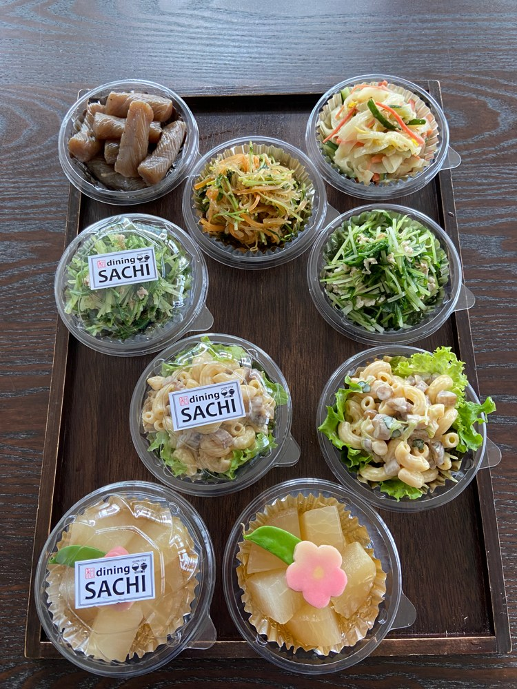
| 営業時間 | ランチ 11:00〜14:30（L.O.14:00） |
|---|---|
| 定休日 | 日曜・月曜（変更あり） |
| 住所 | 兵庫県神戸市須磨区東落合2丁目11-2 |
| 予約 | 要 — ☎ 078-754-8778 ／ 公式サイト |
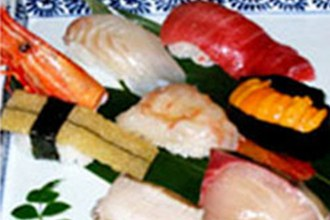
| 営業時間 | 11:00〜14:00（L.O.13:30）／17:00〜21:00（L.O.20:30） |
|---|---|
| 定休日 | 火曜・水曜（祝日の場合は営業） |
| 住所 | 兵庫県神戸市垂水区神田町3番18号 ラ・メール2F |
| 予約 | 推奨 — ☎ 078-705-0333 ／ 公式サイト |
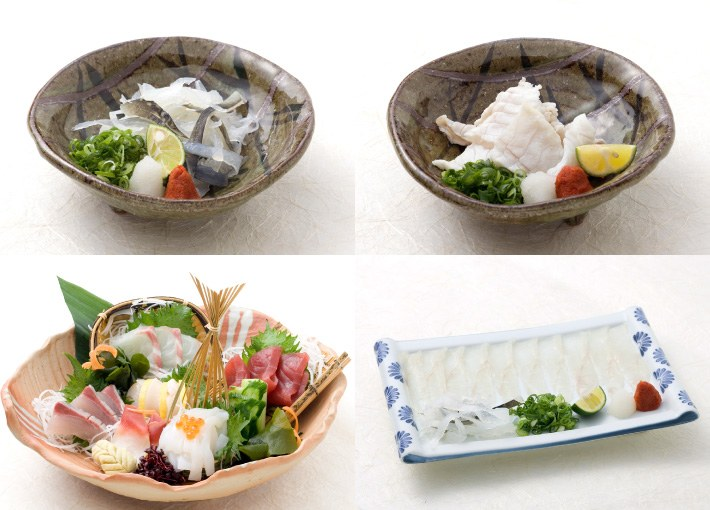
| 営業時間 | 11:30〜15:00／16:30〜21:30 |
|---|---|
| 定休日 | 元旦のみ |
| 住所 | 兵庫県神戸市灘区桜口町4-1-1 ウェルブ六甲四番街二番館 |
| 予約 | 不要 — ☎ 078-851-3417 ／ 公式サイト |
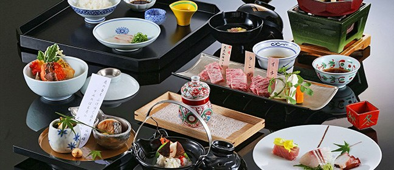
| 営業時間 | 昼 11:30〜14:00（L.O.）／夜 17:30〜19:30（L.O.） |
|---|---|
| 定休日 | 要確認 |
| 住所 | 兵庫県神戸市北区有馬町1304-1 有馬グランドホテル1F |
| 予約 | 推奨（夜の会席は要予約） — ☎ 078-904-0181 ／ 公式サイト |
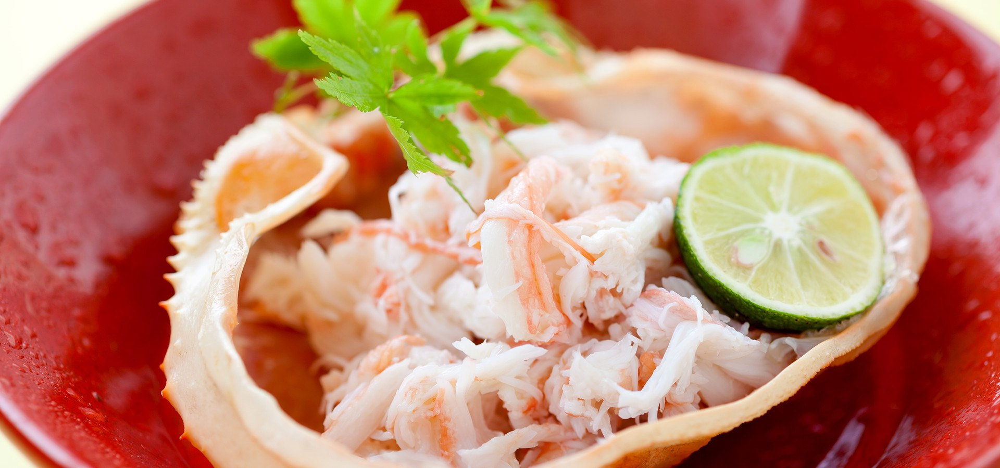
| 営業時間 | 17:00〜22:00（仕出しは11:00〜） |
|---|---|
| 定休日 | 不定休 |
| 住所 | 兵庫県神戸市西区大津和2丁目9-1 ルナバルク1F |
| 予約 | 要（土日祝は1週間前、平日は3日前まで） — ☎ 078-975-3222 ／ 公式サイト |
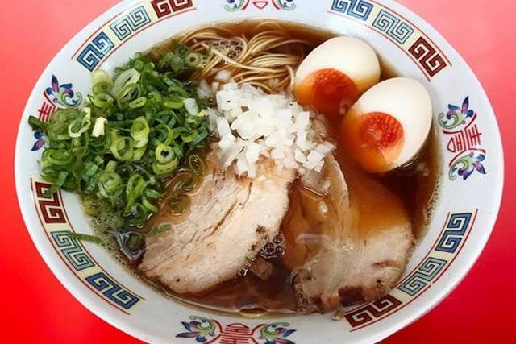
| 営業時間 | 9:00〜23:00（L.O. 22:45） |
|---|---|
| 定休日 | 要確認 |
| 住所 | 兵庫県神戸市中央区楠町7-1-3 |
| 予約 | 不可 — ☎ 078-361-3405 ／ 公式サイト |
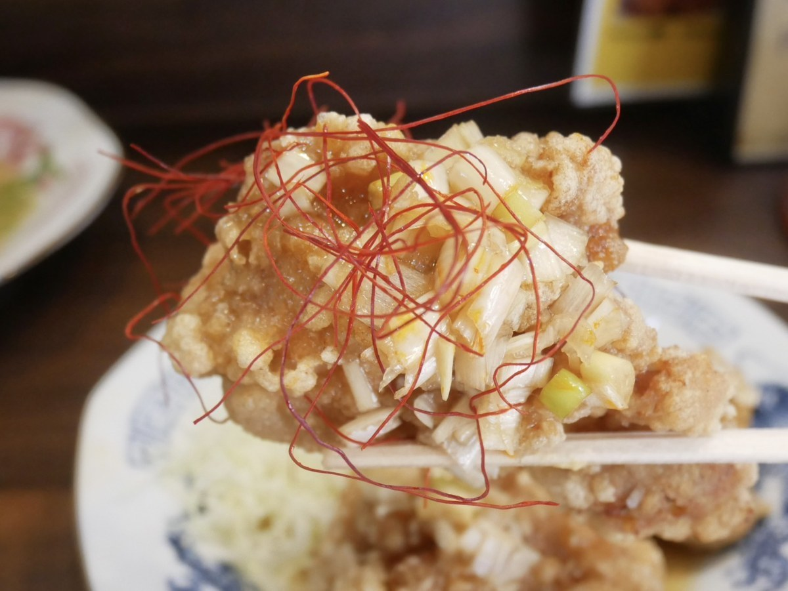
| 営業時間 | 要確認（昼・夜の二部営業） |
|---|---|
| 定休日 | 要確認 |
| 住所 | 兵庫県神戸市中央区中山手通2丁目20-8 鳴海ビル 1c |
| 予約 | 要確認 — 公式サイト |
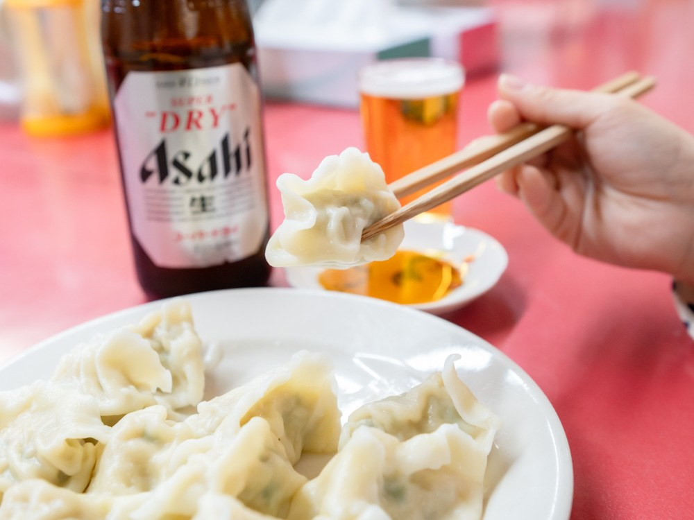
| 営業時間 | 要確認 |
|---|---|
| 定休日 | 要確認 |
| 住所 | 兵庫県神戸市長田区二葉町3-10-12 丸五市場 |
| 予約 | 要確認 — ☎ 080-6168-2578 ／ 公式サイト |
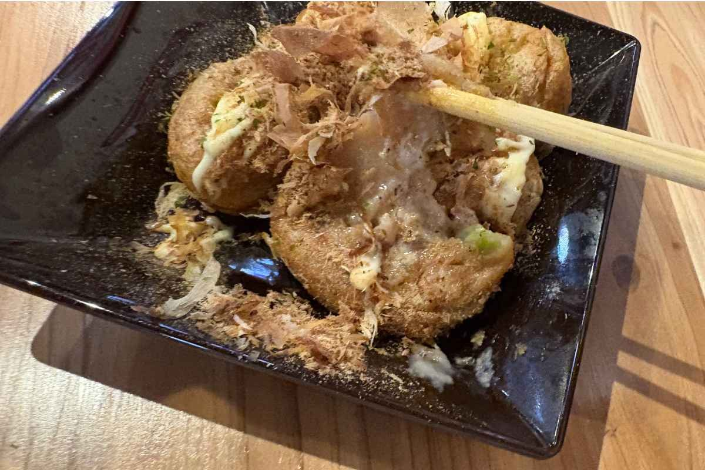
| 営業時間 | 11:00〜23:00 |
|---|---|
| 定休日 | 要確認 |
| 住所 | 兵庫県神戸市兵庫区新開地3-3-11 |
| 予約 | 可 — ☎ 078-954-7799 ／ 公式サイト |
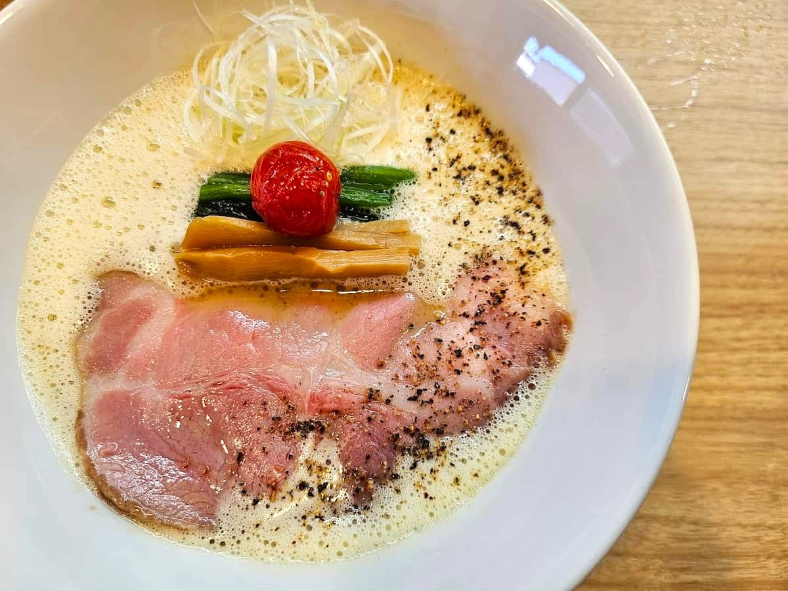
| 営業時間 | 平日 11:00〜13:30／土 19:00〜21:00 |
|---|---|
| 定休日 | 日曜・祝日 |
| 住所 | 兵庫県神戸市兵庫区大開通5丁目1-8 |
| 予約 | 不可 — 公式サイト |
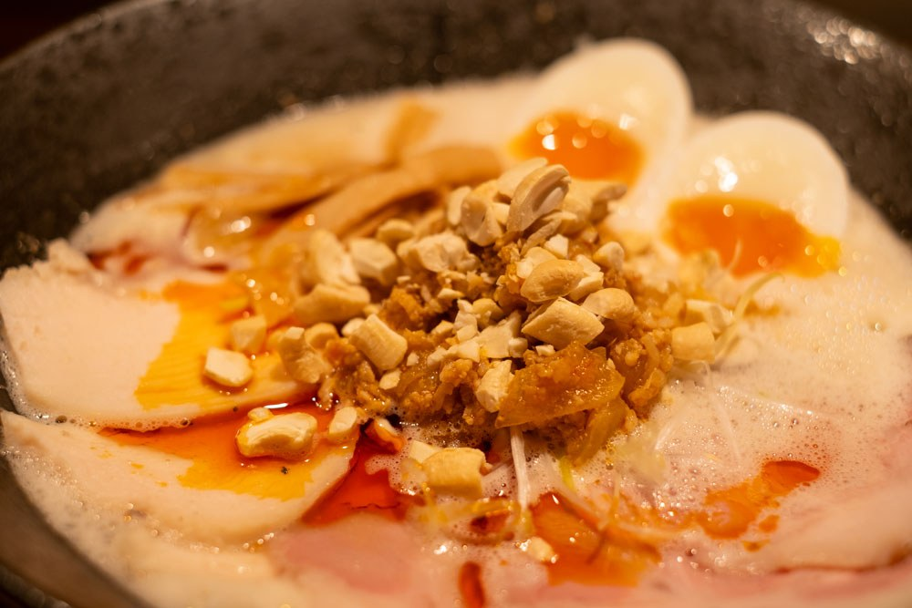
| 営業時間 | 要確認 |
|---|---|
| 定休日 | 要確認 |
| 住所 | 兵庫県神戸市東灘区田中町1-1-10 青山ビル 1F |
| 予約 | 要確認 — 公式サイト |
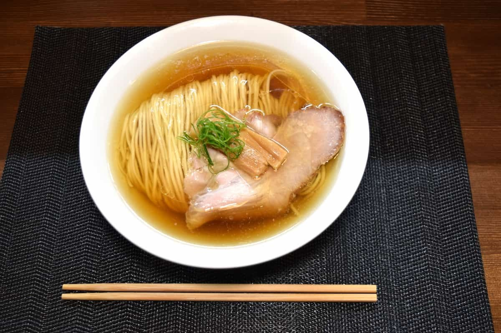
| 営業時間 | 要確認 |
|---|---|
| 定休日 | 要確認 |
| 住所 | 兵庫県神戸市東灘区北青木3丁目20-23 |
| 予約 | 不可 — 公式サイト |
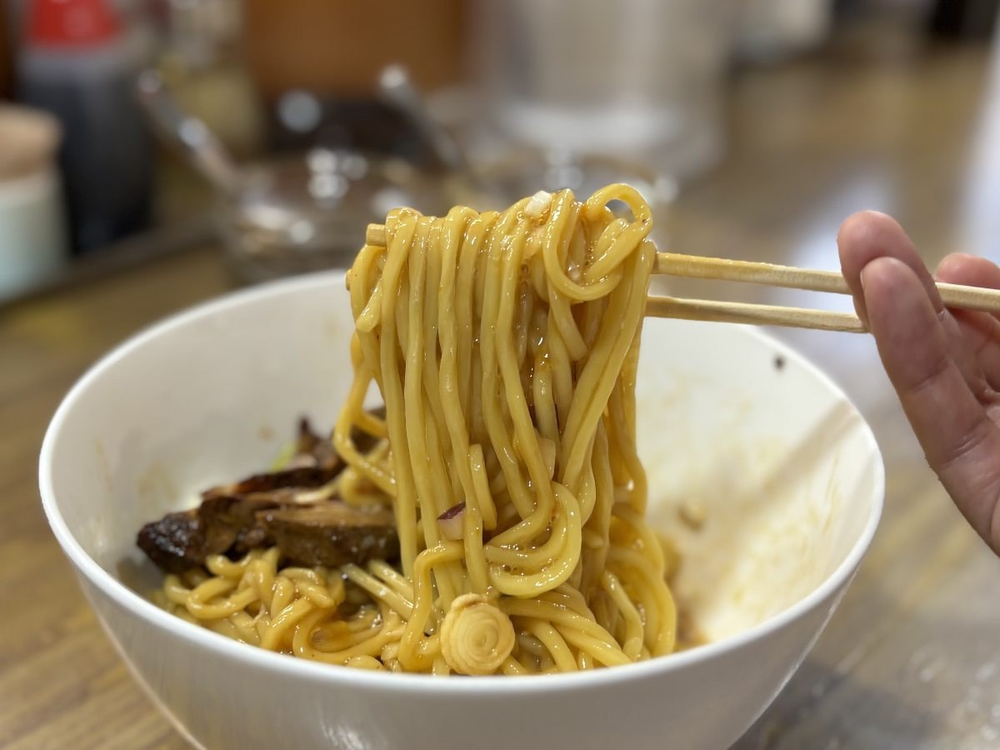
| 営業時間 | 要確認 |
|---|---|
| 定休日 | 要確認 |
| 住所 | 兵庫県神戸市灘区高徳町6丁目3-10 |
| 予約 | 不可 — 公式サイト |
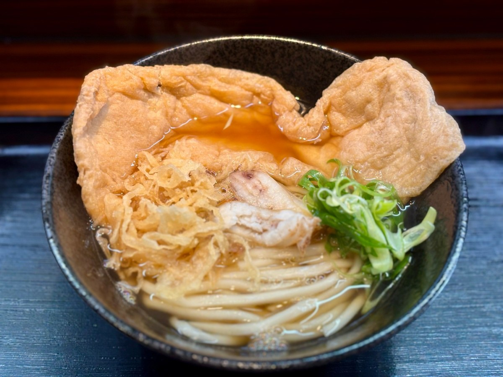
| 営業時間 | 11:00〜14:30／17:30〜21:00 |
|---|---|
| 定休日 | 要確認 |
| 住所 | 兵庫県神戸市北区鈴蘭台南町4丁目3-3 |
| 予約 | 要確認 — ☎ 078-600-9785 ／ 公式サイト |
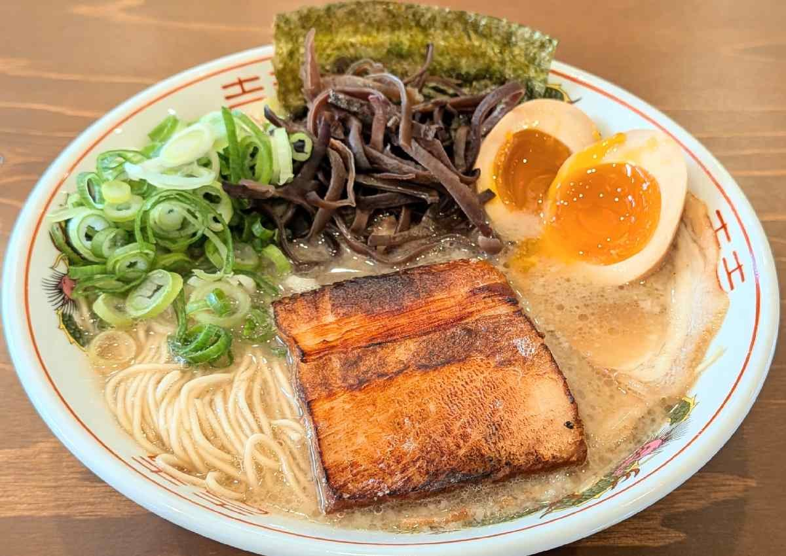
| 営業時間 | 要確認 |
|---|---|
| 定休日 | 要確認 |
| 住所 | 兵庫県神戸市西区神出町田井958-1 |
| 予約 | 要確認 — 公式サイト |
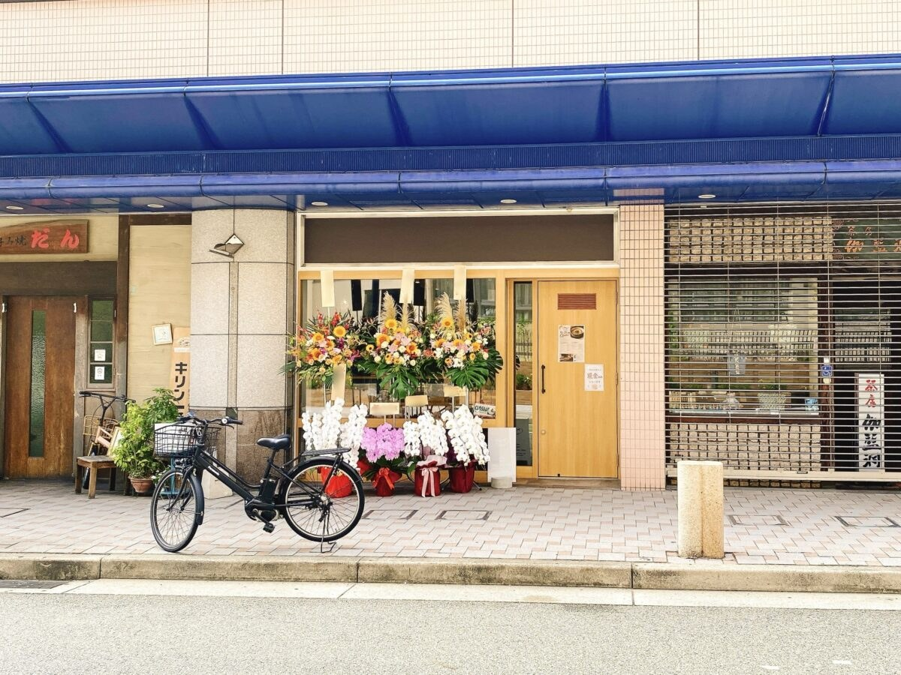
| 営業時間 | 10:00〜15:00／木・金・土のみ 17:00〜21:00 |
|---|---|
| 定休日 | 日曜 |
| 住所 | 兵庫県神戸市垂水区日向1-4-1 レバンテ垂水1階 |
| 予約 | 要確認 — 公式サイト |
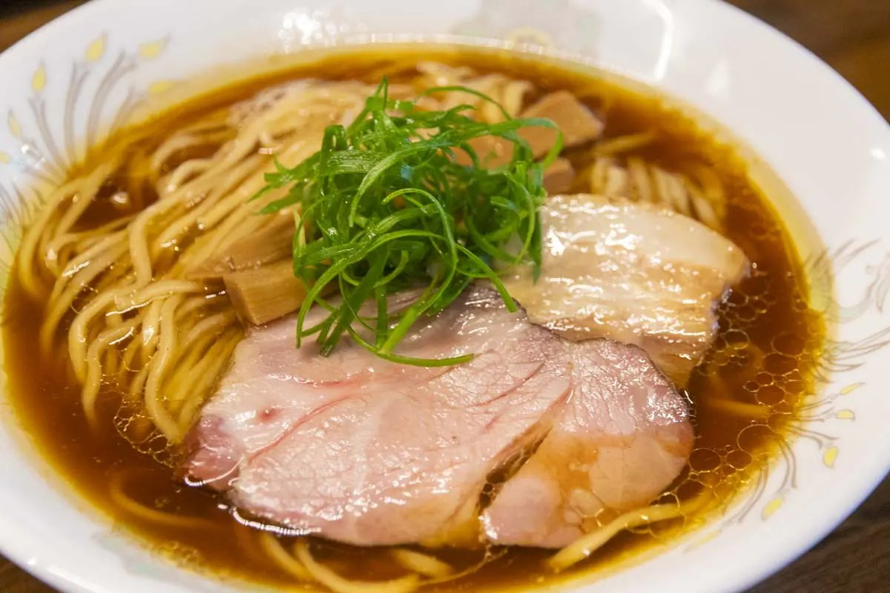
| 営業時間 | 11:00〜14:30／18:00〜21:00 |
|---|---|
| 定休日 | 木曜（ほか不定休） |
| 住所 | 兵庫県神戸市灘区浜田町3-4-5 |
| 予約 | 不可 — 公式サイト |
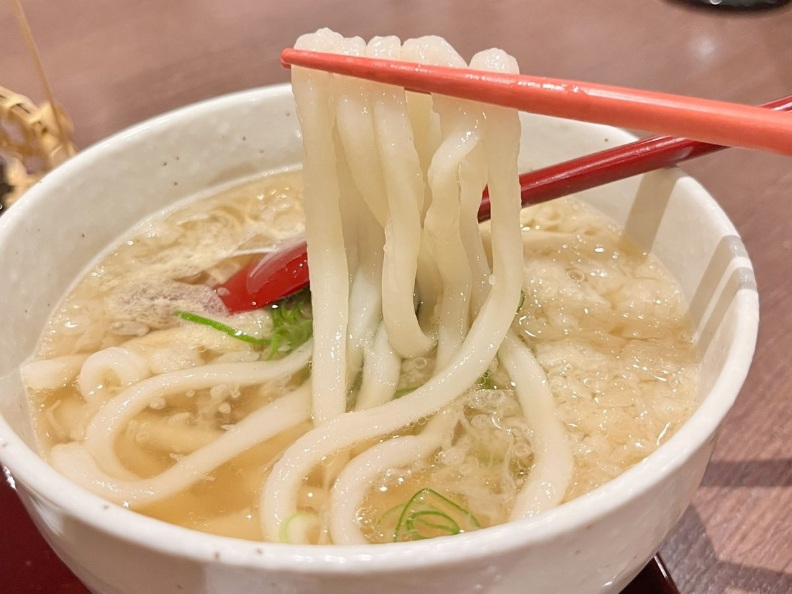
| 営業時間 | 要確認（昼は御膳あり） |
|---|---|
| 定休日 | 要確認 |
| 住所 | 兵庫県神戸市中央区元町通1丁目10-1 ひろひろビル 2F |
| 予約 | 要確認 — 公式サイト |
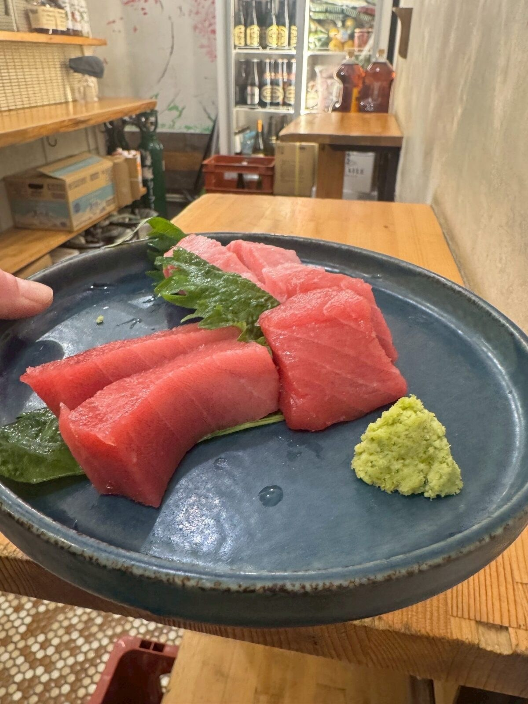
| 営業時間 | 8:30〜22:30 |
|---|---|
| 定休日 | 年中無休 |
| 住所 | 兵庫県神戸市中央区三宮町3-9-24 月原ビル1F |
| 予約 | 要確認 — ☎ 078-595-9006 ／ 公式サイト |
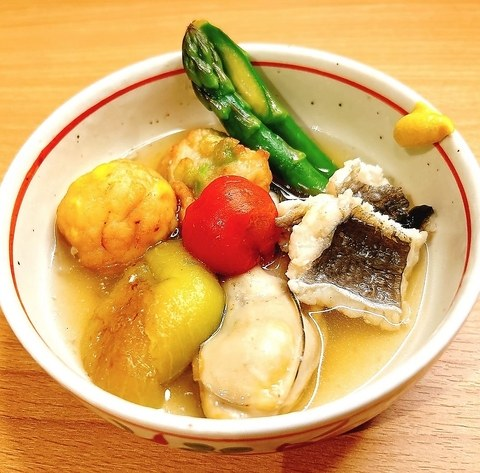
| 営業時間 | 月〜土・祝前日 11:00〜翌2:00／日・祝 11:00〜翌0:00 |
|---|---|
| 定休日 | 年末年始のみ |
| 住所 | 兵庫県神戸市中央区北長狭通1-30-4 |
| 予約 | 可 — ☎ 078-335-6310 ／ 公式サイト |
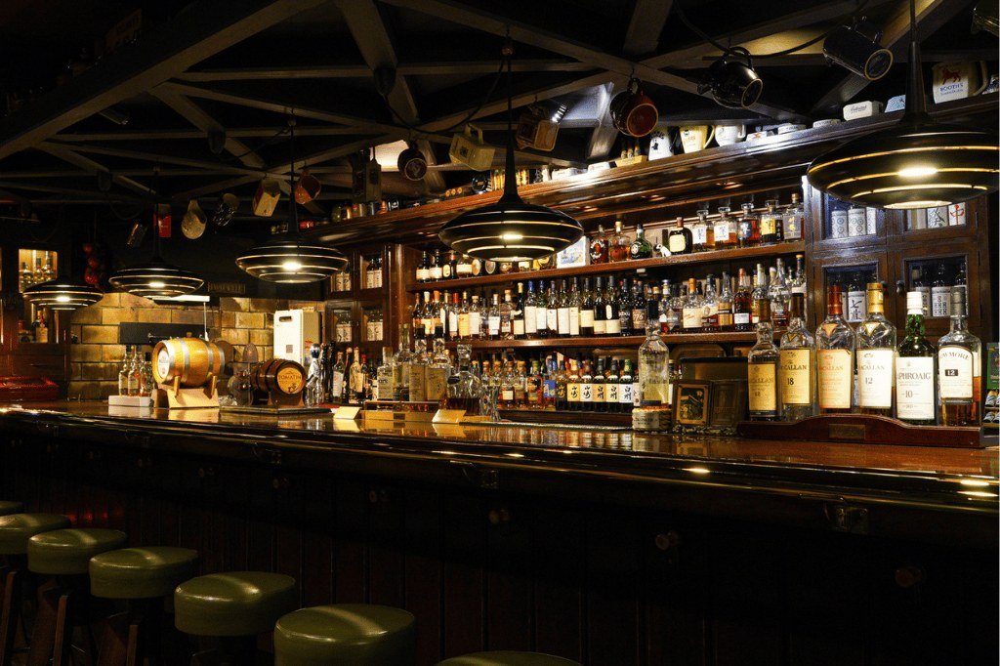
| 営業時間 | 17:30〜24:00 |
|---|---|
| 定休日 | 不定休 |
| 住所 | 兵庫県神戸市中央区山本通1丁目1-2 |
| 予約 | 要確認 — ☎ 078-291-0715 |
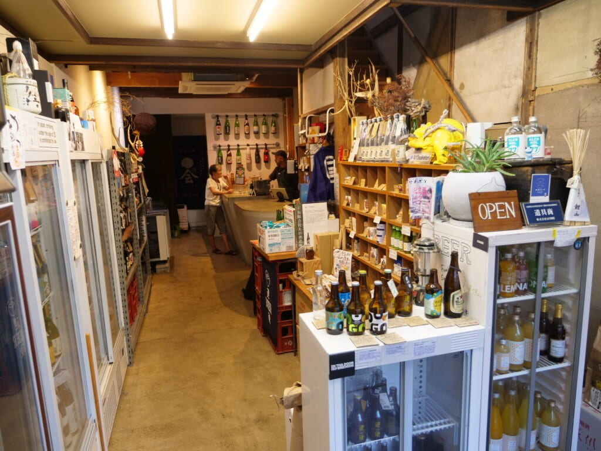
| 営業時間 | 15:00〜23:00 |
|---|---|
| 定休日 | 不定休 |
| 住所 | 兵庫県神戸市中央区琴ノ緒町3-5-7 |
| 予約 | 不要 — ☎ 078-855-2808 ／ 公式サイト |
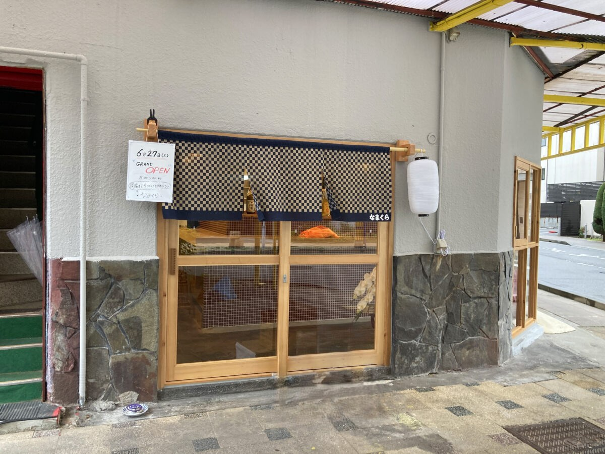
| 営業時間 | 15:00〜22:00 |
|---|---|
| 定休日 | 要確認 |
| 住所 | 兵庫県神戸市兵庫区新開地5-2-23 |
| 予約 | 不要 |
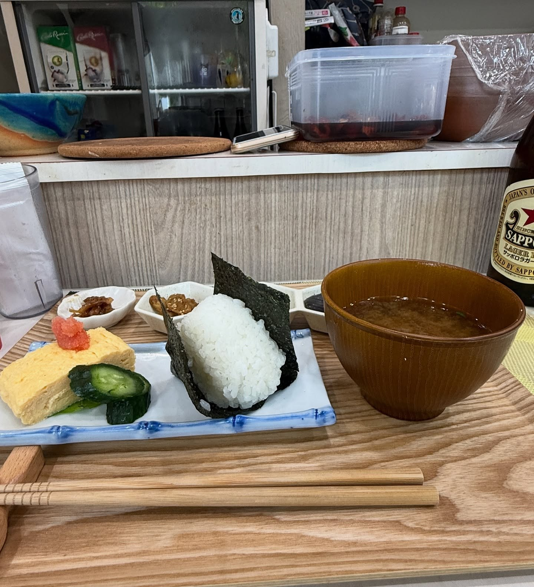
| 営業時間 | 火〜金 7:00〜19:00／土 7:00〜21:00／日 9:00〜16:00 |
|---|---|
| 定休日 | 月曜 |
| 住所 | 兵庫県神戸市灘区稗原町1-5-15 |
| 予約 | 要確認 — ☎ 090-8218-2328 |
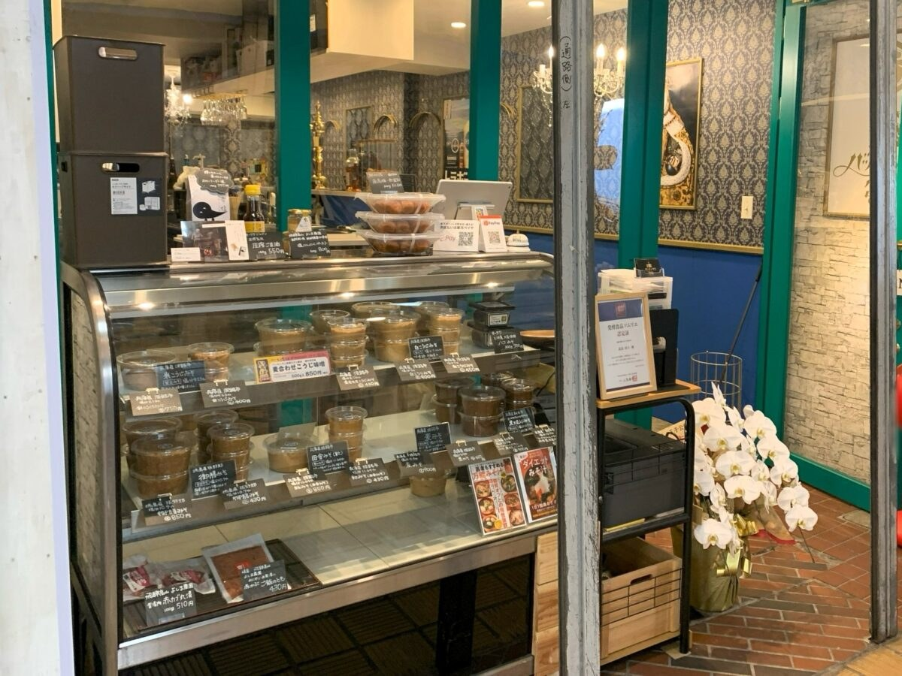
| 営業時間 | 不定期（早い日は12:00開店、深夜2:00まで営業する日もあり） |
|---|---|
| 定休日 | 不定休 |
| 住所 | 兵庫県神戸市灘区水道筋3-2-6 |
| 予約 | 不要 |
| 営業時間 | 10:00〜21:00（日曜・祝日は13:00〜19:00） |
|---|---|
| 定休日 | 月曜・第1/第3日曜 |
| 住所 | 兵庫県神戸市東灘区魚崎南町4丁目15-13 |
| 予約 | 不要 — ☎ 0120-311-101 ／ 公式サイト |
| 営業時間 | 11:00〜14:30（売り切れ次第終了）／夜営業あり |
|---|---|
| 定休日 | 要確認 |
| 住所 | 兵庫県神戸市東灘区御影中町1-8-8 |
| 予約 | 要確認 |
| 営業時間 | 17:00〜21:00 |
|---|---|
| 定休日 | 日曜・祝日 |
| 住所 | 兵庫県神戸市長田区水笠通6丁目1-9 |
| 予約 | 不要 — ☎ 078-621-2944 ／ 公式サイト |
| 営業時間 | 17:30〜23:00（料理L.O. 22:30） |
|---|---|
| 定休日 | 開店から2か月は無休（以降は要確認） |
| 住所 | 兵庫県神戸市長田区東尻池町1-1-13 |
| 予約 | 推奨 — ☎ 070-7592-0818 |
| 営業時間 | 11:00〜L.O.14:30／17:00〜L.O.19:30（土・祝は17:30〜） |
|---|---|
| 定休日 | 日曜・不定休あり |
| 住所 | 兵庫県神戸市中央区江戸町96 ストロングビル1F |
| 予約 | 推奨 — ☎ 078-331-5455 ／ 公式サイト |
| 営業時間 | ランチ11:30〜14:30（L.O.14:00）／ディナー17:00〜20:00（L.O.19:00） |
|---|---|
| 定休日 | 毎週月曜（祝日の場合は翌火曜） |
| 住所 | 兵庫県神戸市中央区元町通1-3-4 |
| 予約 | 不可 — ☎ 078-331-5435 ／ 公式サイト |
| 営業時間 | ランチ11:30〜15:30（L.O.15:00）／ディナー17:30〜22:30（L.O.22:00） |
|---|---|
| 定休日 | 不定休 |
| 住所 | 兵庫県神戸市中央区中山手通2-14-13 ハンタービル1F |
| 予約 | 可 — ☎ 078-222-8665 ／ 公式サイト |
| 営業時間 | 平日11:00〜13:30／土日祝11:00〜13:30・18:00〜19:30 |
|---|---|
| 定休日 | 不定休 |
| 住所 | 兵庫県神戸市兵庫区湊町4-2-12 リビーズ湊川1階 |
| 予約 | 可（開店時間の11時のみ電話予約） — ☎ 078-576-2055 |
| 営業時間 | 水〜土 11:00〜14:30（L.O.13:45）／日 11:00〜14:30・17:00〜19:30 |
|---|---|
| 定休日 | 月曜・火曜 |
| 住所 | 兵庫県神戸市長田区蓮宮通2-10-1 |
| 予約 | 可（日曜ディナーのみ／ランチは予約不可） — ☎ 078-766-5525 ／ 公式サイト |
| 営業時間 | 11:00〜14:30 |
|---|---|
| 定休日 | 水曜・木曜 |
| 住所 | 兵庫県神戸市灘区王子町1丁目1-3 アルデスタ1F |
| 予約 | 要確認 — ☎ 078-802-5091 |
| 営業時間 | 11:00〜15:00（L.O.14:30）／17:00〜21:00（L.O.20:00） |
|---|---|
| 定休日 | 月曜・火曜 |
| 住所 | 兵庫県神戸市灘区岩屋北町5-2-13 |
| 予約 | 要確認 — ☎ 078-882-2667 |
| 営業時間 | ランチ11:00〜14:30（80分制）／ディナー17:00〜21:00（L.O.20:00） |
|---|---|
| 定休日 | 水曜・木曜 |
| 住所 | 兵庫県神戸市東灘区御影郡家2丁目15-11 佐野ビル101 |
| 予約 | 推奨（予約優先） — ☎ 078-822-8880 ／ 公式サイト |
| 営業時間 | ランチ11:00〜（L.O.15:30）／ディナー18:00〜 |
|---|---|
| 定休日 | 木曜 |
| 住所 | 兵庫県神戸市須磨区衣掛町5-1-1 |
| 予約 | 要確認 — ☎ 080-2787-4820 |
| 営業時間 | 11:30〜20:30 |
|---|---|
| 定休日 | 水曜 |
| 住所 | 兵庫県神戸市垂水区狩口台7-15 |
| 予約 | 要確認 — ☎ 078-785-3723 |
| 営業時間 | 平日11:30〜16:00／金は17:00〜20:00（L.O.19:30）も／土日祝11:00〜16:00・17:00〜20:00（L.O.19:30） |
|---|---|
| 定休日 | 火曜（祝日の場合は翌日代休） |
| 住所 | 兵庫県神戸市西区神出町東1180-15 |
| 予約 | 推奨 — ☎ 078-965-0002 ／ 公式サイト |
| 営業時間 | 11:30〜14:30／17:30〜20:30 |
|---|---|
| 定休日 | 木曜、第2・第4金曜（第1月曜はディナー休。定休日が祝日の場合は翌日に振替） |
| 住所 | 兵庫県神戸市西区南別府1-17-1 |
| 予約 | 推奨 — ☎ 078-974-7768 ／ 公式サイト |
| 営業時間 | 8:30〜22:00（2026年6月1日以降） |
|---|---|
| 定休日 | 毎月最終月曜日（一部例外あり） |
| 住所 | 兵庫県神戸市中央区中山手通1丁目26-3 |
| 予約 | 不要 — ☎ 078-221-1872 ／ 公式サイト |
| 営業時間 | 菓子販売 10:00〜18:00／喫茶あり（時間は店頭確認） |
|---|---|
| 定休日 | 第2・第4火曜日 |
| 住所 | 兵庫県神戸市中央区元町通3丁目3-10 |
| 予約 | 不要 — 公式サイト |
| 営業時間 | 1階ショップ 10:00〜18:00／2階カフェ 10:00〜16:30（L.O.16:00、2026年8月1日以降） |
|---|---|
| 定休日 | 水曜（祝日の場合は翌日） |
| 住所 | 兵庫県神戸市中央区生田町4-6-15 |
| 予約 | 不可 — ☎ 078-231-6051 ／ 公式サイト |
| 営業時間 | 9:00〜20:30 |
|---|---|
| 定休日 | 要確認 |
| 住所 | 兵庫県神戸市東灘区御影中町1丁目6-8 |
| 予約 | 不要 — ☎ 078-851-7651 ／ 公式サイト |
| 営業時間 | 11:00〜19:00 |
|---|---|
| 定休日 | 月曜・火曜 |
| 住所 | 兵庫県神戸市灘区桜口町5丁目1-1 ウェルブ六甲道5番街1番館1階 |
| 予約 | 不要 — ☎ 078-891-6592 ／ 公式サイト |
| 営業時間 | 6:45〜（詳細は店頭確認） |
|---|---|
| 定休日 | 要確認 |
| 住所 | 兵庫県神戸市兵庫区小松通3丁目1-3 |
| 予約 | 不要 — ☎ 078-671-7370 |
| 営業時間 | 要確認（曜日ごとに店長が替わるシェア型営業） |
|---|---|
| 定休日 | 要確認 |
| 住所 | 兵庫県神戸市長田区檜川町1丁目14-7 |
| 予約 | 要確認 |
| 営業時間 | 9:00〜20:00（カフェも同時間） |
|---|---|
| 定休日 | 年中無休 |
| 住所 | 兵庫県神戸市須磨区堀池町2-1-25 |
| 予約 | 不要 — ☎ 078-731-3675 ／ 公式サイト |
| 営業時間 | 平日 10:00〜13:00／13:30〜20:00、土日祝 10:00〜20:00 |
|---|---|
| 定休日 | 無休（元旦を除く） |
| 住所 | 兵庫県神戸市垂水区東舞子町10-1-112 ティオ舞子1F |
| 予約 | 可 — ☎ 078-785-7108 ／ 公式サイト |
| 営業時間 | 10:00〜17:00 |
|---|---|
| 定休日 | 水曜・木曜 |
| 住所 | 兵庫県神戸市北区八多町屏風613-3 |
| 予約 | 不要 — ☎ 078-904-9000 ／ 公式サイト |
| 営業時間 | 7:00〜（詳細は店頭確認） |
|---|---|
| 定休日 | 要確認 |
| 住所 | 兵庫県神戸市西区狩場台3丁目9-15 かりばプラザ |
| 予約 | 不要 — ☎ 078-993-0100 |
本ガイドは個人利用目的で作成。掲載情報は2026年9月時点の調査に基づく。写真出典: 各店の公式サイト・公式SNS、および地域情報サイト等の掲載写真（著作権は各サイト・各撮影者に帰属）。引用元は店ごとにカード内へ明記。